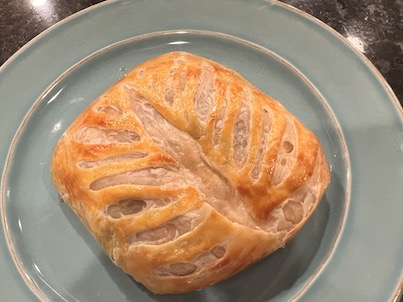
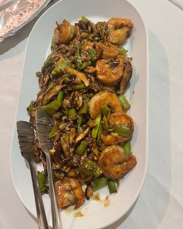

Salmon Wellington Comments: This recipe was a little complicated but tasted alright. I think the puff pastry may have been too thin. Source: Well Plated 
Shrimp Stir-fry Comments: This recipe was delicious! But I had a lot of help from other people at The Gathering Table. Source: The Gathering Table 
Sugar Free Vanilla Cake Comments: I made this cake for my partner's birthday. He likes golf so I made it golf-themed. Source: Birch Benders